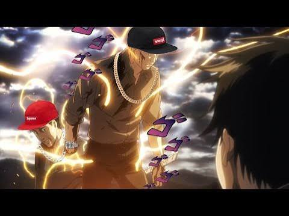
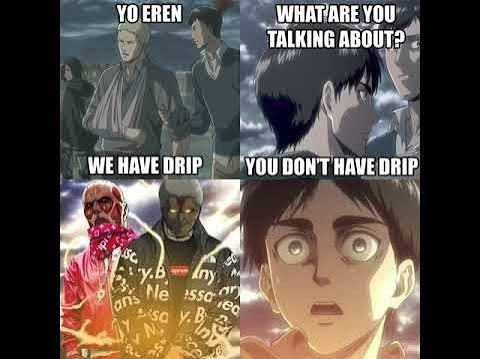
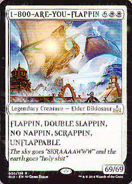

In the anime "Attack on Titan" Eren Yeager, who is the main character, finds out that Reiner and Berdholdt are titans. He is shocked because he can't believe they are the enemy of humanity. He is going through an inner turmoil because they were his close comrades working together to defeat the titans. This is the brain-rot meme version of the original scene. Reiner and Berdholdt transform into "dripped-out" versions of their titan forms. I was inspired by this hilarious scene. I wanted to make an art of "Odric, Lunarch Marshal" from MTG that captured that energy. See below for images of inspiration for my painting alter of the "Odric, Lunarch Marshal" MTG card.
Also


